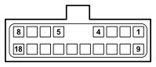

M135B ELECTRIC WINDOWS/CENTRAL LOCKING CONTROL UNIT (OPTIONAL DASHBOARD)
- Path
- Electrical equipment > 3 CONNECTORS > M INTERMITTENT AND TIMED ELECTRONIC DEVICES > M135 ELECTRIC WINDOWS/CENTRAL LOCKING CONTROL UNIT > M135B ELECTRIC WINDOWS/CENTRAL LOCKING CONTROL UNIT (OPTIONAL DASHBOARD)
- Kind
- connector pinout (pin -> wire colour -> other end)
- Applies to
- all engines; all production periods
- Interactive page
- https://sloeber94.github.io/elrnDB-fDct/en/#/244003536
Applies to: all engines; all production periods

Wiring | Colour |
|---|---|
BIANCO (white) |
Pin | Cable | Destination | |||
|---|---|---|---|---|---|
Sec.. | Colour | Node | Connect. | Pin | |
4 | 1,5 | G (yellow) | 1 | ||
5 | 1,5 | H (grey) | 1 | ||
7 | 0,35 | AB (light blue with white stripe) | 9 | ||
8 | 1,5 | RL (red with blue stripe) | See B101B OPTIONAL JUNCTION UNIT UNDER THE DASHBOARD (OPTIONAL DASHBOARD) | 11 | |
13 | 1,5 | N (black) | 3 | ||
15 | 0,35 | BV (white with green stripe) | 6 | ||
16 | 0,35 | AZ (light blue with violet stripe) | 6 | ||
Topics linked from this page (6)
- 19 OPTIONAL DASHBOARD
- B101B OPTIONAL JUNCTION UNIT UNDER THE DASHBOARD (OPTIONAL DASHBOARD)
- C020 PASSENGER SIDE DASHBOARD EARTH
- D097E SHORT CIRCUITING COUPLING (OPTIONAL DASHBOARD)
- D097G SHORT CIRCUITING COUPLING (OPTIONAL DASHBOARD)
- D097I SHORT CIRCUITING COUPLING (OPTIONAL DASHBOARD)
Topics that link to this page (12)
- B101B OPTIONAL JUNCTION UNIT UNDER THE DASHBOARD (OPTIONAL DASHBOARD)
- B101B OPTIONAL JUNCTION UNIT UNDER THE DASHBOARD (OPTIONAL DASHBOARD)
- C020 PASSENGER SIDE DASHBOARD EARTH (OPTIONAL DASHBOARD)
- C020 PASSENGER SIDE DASHBOARD EARTH (OPTIONAL DASHBOARD)
- C020 PASSENGER SIDE DASHBOARD EARTH (OPTIONAL DASHBOARD)
- D097E SHORT CIRCUITING COUPLING (OPTIONAL DASHBOARD)
- D097E SHORT CIRCUITING COUPLING (OPTIONAL DASHBOARD)
- D097E SHORT CIRCUITING COUPLING (OPTIONAL DASHBOARD)
- D097E SHORT CIRCUITING COUPLING (OPTIONAL DASHBOARD)
- D097E SHORT CIRCUITING COUPLING (OPTIONAL DASHBOARD)
- D097G SHORT CIRCUITING COUPLING (OPTIONAL DASHBOARD)
- D097I SHORT CIRCUITING COUPLING (OPTIONAL DASHBOARD)